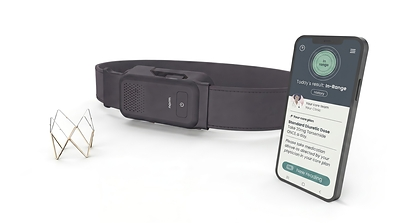
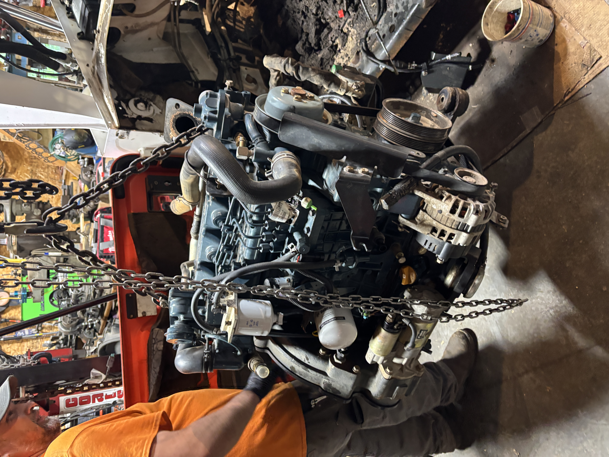

Experience & personal projects
Other work
Engineering experience and personal projects outside my university research.
FIRE1
Worked with the implantation team to investigate NORM Sensor deployment through a catheter. Parts of the nitinol frame caught on each other as the sensor emerged from the catheter. I ran deployment tests using both benchtop fixtures and anatomical models, varying how the sensor was loaded into the catheter and released to find a method that would prevent the frame from catching on itself. The team had to balance mechanical reliability with how doctors would perform the deployment and what they could see under fluoroscopy (real-time X-ray imaging).


Engine work
Assisted mechanical engineer Lee Gagne with engine teardown, inspection, reassembly, precision measurement, component refurbishment, and system testing.


Loudspeakers
I started with an existing loudspeaker design and made it my own, from the CNC-routed MDF cabinets to the drivers, crossovers, and wiring inside. This build brought together woodworking, electronics, and plenty of careful assembly.
The curved cabinets were the trickiest part. I calculated the spacing and depth of the narrow cuts that let the panels bend into shape. Once cut, the panels were delicate, so shaping them took patience and a steady hand.
Then came the listening tests. I also used a signal generator to check the speakers across different frequencies, which helped uncover a rattle. The culprit was a loose wire connection; securing it cleared up the sound.


Amateur radio
Amateur Extra licensed operator. Built and tuned multi-band transceivers.